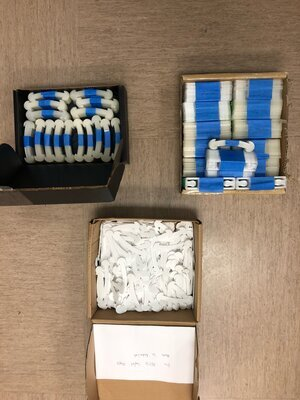
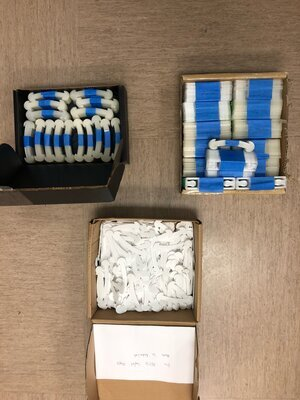

Illinois MakerLab Spearheads COVID-19 Campus Response Efforts
The Illinois MakerLab is helping fight COVID-19 by participating in several campus and community efforts aimed at producing personal protective equipment (PPE) for healthcare workers. Workers at the Illinios MakerLab as well as the surrounding community are collaborating in the design and manufacturing of this re-usable 3D Printed PPE. The Illinois MakerLab is aiding the efforts through 2 different initiatives: a re-usable N95 Masks, and comfort straps & adjusters for Face Shields. Printed in either PLA or PETG, the campus team is working on protocols for reuse and sanitizing the masks and shields.
CAMPUS WIDE COMFORT STRAPS & ADJUSTER INITIATIVE
The Illinois MakerLab is taking part in the campus wide initiative to provide PPE for healthcare workers. Currently production is underway to 3D Print, assemble and deliver face shields to local hospitals. To aid the initiative the Illinois MakerLab is 3D Printing adjusters and comfort straps. These parts allow the user to adjust the face shield for a more comfortable feel. As of April 25th, the Illinois MakerLab has printed 1,245 adjusters in PLA, 660 comfort straps in PLA, and 310 comfort straps in PETG.
 

CAMPUS WIDE N95 MASK INITIATIVE
Part of a campus wide initiative to help deliver personal protective equipment to healthcare workers and those who need it, the Illinois MakerLab is aiding by printing N95 Masks. Printing in PETG, this material is slightly different than the common PLA the MakerLab prints in so production has been slowed as the MakerLab identifies the best way to print these masks in order to maximize mask quality.

Stay tuned for MakerLab updates by subscribing to our newsletter, or following us on Snapchat (uimakerlab), Twitter or Instagram. Have something you'd like help creating? Contact us and we'll help you get started!